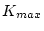
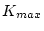

An efficient and accurate scheme for solving the many-electron
problem of a crystal (with nuclei at fixed positions) is the
local spin density approximation (LSDA) within density functional
theory (Hohenberg and Kohn 64, Kohn and Sham 65). Therein the
key quantities are the spin densities
in terms of which
the total energy is
with  the repulsive Coulomb energy of the fixed nuclei and the
electronic contributions, labelled conventionally as, respectively, the
kinetic energy (of the non-interacting particles), the
electron-electron repulsion, nuclear-electron attraction, and
exchange-correlation energies. Two approximations comprise the LSDA,
i), the assumption that can be written in terms of a local
exchange-correlation energy density times the total
(spin-up plus spin-down) electron density as
the repulsive Coulomb energy of the fixed nuclei and the
electronic contributions, labelled conventionally as, respectively, the
kinetic energy (of the non-interacting particles), the
electron-electron repulsion, nuclear-electron attraction, and
exchange-correlation energies. Two approximations comprise the LSDA,
i), the assumption that can be written in terms of a local
exchange-correlation energy density times the total
(spin-up plus spin-down) electron density as
and ii), the particular form chosen for that . Several forms exist in literature, we use the most recent and accurate fit to the Monte-Carlo simulations of Ceperly and Alder by Perdew and Wang 92. has a variational equivalent with the familiar Rayleigh-Ritz principle. The most effective way known to minimize by means of the variational principle is to introduce orbitals constrained to construct the spin densities as
Here, the
are occupation numbers such that
,
where is the symmetry-required weight of point  . Then variation
of gives the Kohn-Sham equations (in Ry atomic units),
. Then variation
of gives the Kohn-Sham equations (in Ry atomic units),
which must be solved and thus constitute the primary computational task. This Kohn-Sham equations must be solved self-consistently in an iterative process, since finding the Kohn-Sham orbitals requires the knowledge of the potentials which themselves depend on the (spin-) density and thus on the orbitals again.
Recent progress has been made going beyond the LSDA by adding gradient terms of the electron density to the exchange-correlation energy or its corresponding potential. This has led to the generalized gradient approximation (GGA) in various parameterizations, e.g. the one by Perdew et al 92 or Perdew, Burke and Ernzerhof (PBE) 96, which is the recommended option.
A recent version called meta-GGA by Perdew et al (1999) and Tao et al. (2003) employes for the evaluation of the exchange-correlation energy not only the gradient of the density, but also the kinetic energy density . Unfortunately, such schemes are not yet self-consistent.
Recently, the development of the Augmented Plane Wave (APW) methods from Slater's APW, to LAPW and the new APW+lo was described by Schwarz et al. 2001.
The linearized augmented plane wave (LAPW) method is among the most accurate methods for performing electronic structure calculations for crystals. It is based on the density functional theory for the treatment of exchange and correlation and uses e.g. the local spin density approximation (LSDA). Several forms of LSDA potentials exist in the literature , but recent improvements using the generalized gradient approximation (GGA) are available too (see sec. 2.1). For valence states relativistic effects can be included either in a scalar relativistic treatment (Koelling and Harmon 77) or with the second variational method including spin-orbit coupling (Macdonald 80, Novák 97). Core states are treated fully relativistically (Desclaux 69).
A description of this method to linearize Slater's old APW method (i.e. the LAPW formalism) and further programming hints are found in many references: Andersen 73, 75, Koelling 72, Koelling and Arbman 75, Wimmer et al. 81, Weinert 81, Weinert et al. 82, Blaha and Schwarz 83, Blaha et al. 85, Wei et al. 85, Mattheiss and Hamann 86, Jansen and Freeman 84, Schwarz and Blaha 96). An excellent book by D. Singh (Singh 94) describes all the details of the LAPW method and is highly recommended to the interested reader. Here only the basic ideas are summarized; details are left to those references.
Like most ``energy-band methods``, the LAPW method is a procedure for solving the Kohn-Sham equations for the ground state density, total energy, and (Kohn-Sham) eigenvalues (energy bands) of a many-electron system (here a crystal) by introducing a basis set which is especially adapted to the problem.
This adaptation is achieved by dividing the unit cell into (I) non-overlapping atomic spheres (centered at the atomic sites) and (II) an interstitial region. In the two types of regions different basis sets are used:
where is the (at the origin) regular solution of the
radial Schroedinger equation for energy  (chosen normally at
the center of the corresponding band with l-like character) and the
spherical part of the potential inside sphere ;
is the energy derivative of evaluated at the same energy
(chosen normally at
the center of the corresponding band with l-like character) and the
spherical part of the potential inside sphere ;
is the energy derivative of evaluated at the same energy  .
A linear combination of these two functions
constitute the linearization of the radial function; the
coefficients
.
A linear combination of these two functions
constitute the linearization of the radial function; the
coefficients  and
and  are functions of (see
below) determined by requiring that this basis function matches (in
value and slope) each plane wave (PW) the corresponding basis function of the
interstitial region; and
are functions of (see
below) determined by requiring that this basis function matches (in
value and slope) each plane wave (PW) the corresponding basis function of the
interstitial region; and  are obtained by numerical
integration of the radial Schroedinger equation on a radial mesh
inside the sphere.
are obtained by numerical
integration of the radial Schroedinger equation on a radial mesh
inside the sphere.
where ; are the reciprocal lattice vectors and is the wave vector inside the first Brillouin zone. Each plane wave is augmented by an atomic-like function in every atomic sphere.
The solutions to the Kohn-Sham equations are expanded in this combined basis set of LAPW's according to the linear variation method
and the coefficients are determined by the Rayleigh-Ritz variational
principle. The convergence of this basis set is controlled by
a cutoff parameter = 6 - 9, where  is the smallest
atomic sphere radius in the unit cell and  is the magnitude
of the largest
is the smallest
atomic sphere radius in the unit cell and  is the magnitude
of the largest  vector in equation (2.6).
vector in equation (2.6).
In order to improve upon the linearization (i.e. to increase the
flexibility of the basis) and to make possible a consistent treatment
of semicore and valence states in one energy window (to ensure
orthogonality) additional ( independent) basis functions can be
added. They are called ``local orbitals (LO)`` (Singh 91) and consist of a
linear combination of 2 radial functions at 2 different energies (e.g.
at the  and
and  energy) and one energy derivative (at one of
these energies):
energy) and one energy derivative (at one of
these energies):
The coefficients  ,
,  and
and  are determined by
the requirements that should be normalized and has zero value
and slope at the sphere boundary.
are determined by
the requirements that should be normalized and has zero value
and slope at the sphere boundary.
Sjöstedt, Nordström and Singh (2000) have shown
that the standard LAPW method with the additional constraint on the PWs
of matching in value AND slope to the solution inside the sphere is not
the most efficient way to linearize Slater's APW method. It can be
made much more efficient when one uses the standard APW basis, but of
course with at a fixed energy  in order to keep the
linear eigenvalue problem. One then adds a new local
orbital () to have enough variational flexibility in the radial
basisfunctions:
in order to keep the
linear eigenvalue problem. One then adds a new local
orbital () to have enough variational flexibility in the radial
basisfunctions:
This new (denoted with lower case to distinguish it from the LO given in
equ. 2.7) looks almost like the old ``LAPW''-basis set, but here the
 and
and  do not depend on and are determined by the
requirement that the is zero at the sphere boundary and normalized.
do not depend on and are determined by the
requirement that the is zero at the sphere boundary and normalized.
Thus we construct basis functions that have ``kinks'' at the sphere boundary, which makes it necessary to include surface terms in the kinetic energy part of the Hamiltonian. Note, however, that the total wavefunction is of course smooth and differentiable.
As shown by Madsen et al. (2001) this new scheme converges practically to identical results as the LAPW method, but allows to reduce ``RKmax'' by about one, leading to significantly smaller basis sets (up to 50 %) and thus the corresponding computational time is drastically reduced (up to an order of magnitude). Within one calculation a mixed ``LAPW and APW+lo'' basis can be used for different atoms and even different -values for the same atom (Madsen et al. 2001). In general one describes by APW+lo those orbitals which converge most slowly with the number of PWs (such as TM 3d states) or the atoms with a small sphere size, but the rest with ordinary LAPWs. One can also add a second LO at a different energy so that both, semicore and valence states, can be described simultaneously.
In its general form the LAPW (APW+lo) method expands the potential in the following form
and the charge densities analogously. Thus no shape approximations are made, a procedure frequently called a ``full-potential`` method.
The ``muffin-tin`` approximation used in early band calculations corresponds to retaining only the component in the first expression of equ. 2.10 and only the component in the second. This (much older) procedure corresponds to taking the spherical average inside the spheres and the volume average in the interstitial region.
The total energy is computed according to Weinert et al. 82.
Rydberg atomic units are used except internally in the atomic-like programs (LSTART and LCORE) or in subroutine outwin (LAPW1, LAPW2), where Hartree units are used. The output is always given in Rydberg units.
The forces at the atoms are calculated according to Yu et al (91). For the implementation of this formalism in WIEN see Kohler et al (96) and Madsen et al. 2001. An alternative formulation by Soler and Williams (89) has also been tested and found to be equivalent, both in computationally efficiency and numerical accuracy (Krimmel et al 94).
The Fermi energy and the weights of each band state can be calculated using a modified tetrahedron method (Blöchl et al. 94), a Gaussian or a temperature broadening scheme.
Spin-orbit interactions can be considered via a second variational step using the scalar-relativistic eigenfunctions as basis (see Macdonald 80, Singh 94 and Novák 97). In order to overcome the problems due to the missing radial basis function in the scalar-relativistic basis (which corresponds to ), we have recently extended the standard LAPW basis by an additional ``-local orbital'', i.e. a LO with a basis function, which is added in the second-variational SO calculation (Kuneš et al. 2001).
It is well known that for localized electrons (like the 4f states in lanthanides or 3d states in some TM-oxides) the LDA (GGA) method is not accurate enough for a proper description. Thus we have implemented various forms of the LDA+U method as well as the ``Orbital polarization method'' (OP) (see Novák 2001 and references therein). In addition you can also calculate exact-exchange inside the spheres and apply various hybrid functionals (see Tran et al. 2006 for details).
One can also consider interactions with an external magnetic (see Novák 2001) or electric field (via a supercell approach, see Stahn et al. 2000).
PROPERTIES:
The density of states (DOS) can be calculated using the modified tetrahedron method of Blöchl et al. 94.
X-ray absorption and emission spectra are determined using Fermi's golden rule and dipole matrix elements (between a core and valence or conduction band state respectively). (Neckel et al. 75, Schwarz et al 79,80)
X-ray structure factors are obtained by Fourier Transformation of the charge density.
Optical properties are obtained using the ``Joint density of states'' modified with the respective dipole matrix elements according to Ambrosch et al. 95, Abt et al. 94, Abt 97. and in particular Ambrosch 06. A Kramers-Kronig transformation is also possible.
An analysis of the electron density according to Bader's ``atoms in molecules'' theory can be made using a program by J. Sofo and J. Fuhr (2001)